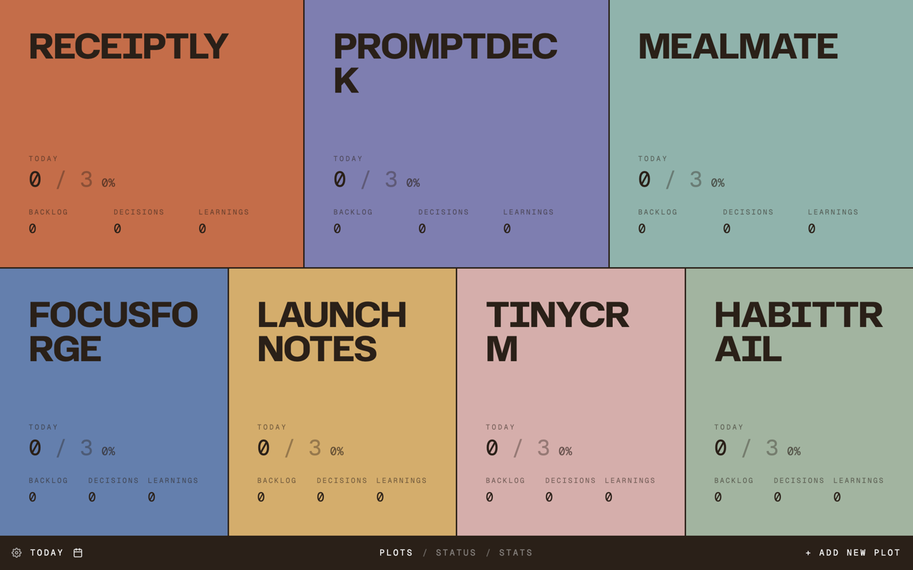
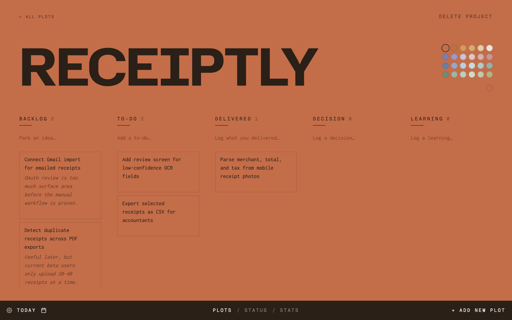
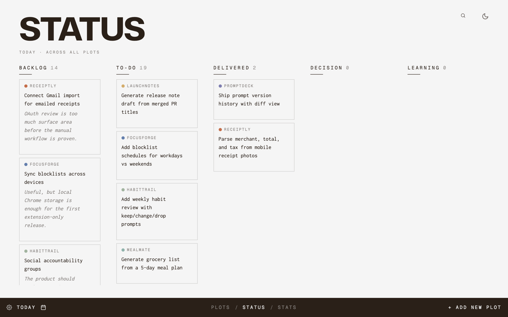
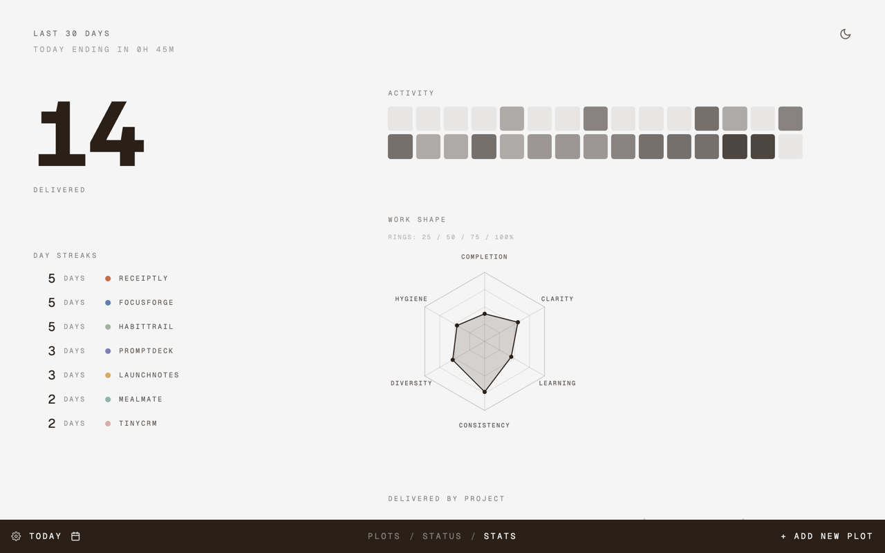

Receipts
Prompts
Meals
Focus
Launch
Stay on top of all your projects.
Plot replaces the blank Chrome new tab with a live project map. Each project gets its own colored piece of ground, so neglected work is visible before it disappears.

Track tickets for each project.
Open a project to work through its real contents: tasks, shipped deliverables, decisions, learnings, and the notes that keep the project moving.

Get an overview of all your tickets.
Track Backlog, To-do, and Delivered without turning your personal projects into a heavy project management ritual.

Visualize your progress and growth.
Lightweight analytics show delivery, streaks, activity, and work shape across projects without turning progress into surveillance.

Your one-acre field for self-directed work.
Plot is for people growing several things at once: vibe-coded apps, writing, study, experiments, client ideas, and tiny tools that may or may not become real products.
The point is not to capture every possible task. The point is to open a new tab and know what deserves attention today.
When something ships, Plot asks what actually got delivered. Over time, your new tab becomes a quiet record of movement.
FAQ
FAQ
What does Plot replace?
Plot replaces the Chrome new tab page. Opening a new tab shows your project workspace instead of a blank page or default start screen.
Where is my data stored?
Your projects, tasks, decisions, learnings, layout, and preferences are stored locally in Chrome storage.
Does Plot require an account?
No. Plot is local-first and does not require a cloud account for the current version.
Can I back up my projects?
Yes. Plot supports optional local backup to a folder you choose on your own device.
Who is Plot for?
Indie builders, vibe coders, creators, students, researchers, and anyone tending multiple personal projects.